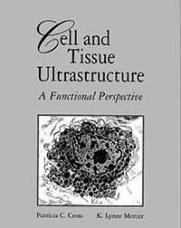

Foto’s practicum
Figuren uit "Cell and Tissue Ultrastructure: A Functional Perspective"
Patricia C. Cross, K.Lynne Mercer

Practicum 2: figuren uit "Cell and Tissue Ultrastructure" hoofdstuk 2: epithelium
Practicum 3: figuren uit "Cell and Tissue Ultrastructure" hoofdstuk 3: connective tissue
Practicum 4: figuren uit "Cell and Tissue Ultrastructure" hoofdstuk 3: connective tissue
Practicum 5: figuren uit "Cell and Tissue Ultrastructure" hoofdstuk 4: muscle en hoofdstuk 7: blood
Practicum 6 : figuren uit "Cell and Tissue Ultrastructure" hoofdstuk 5: nerve
Practicum 7: figuren uit "Cell and Tissue Ultrastructure" hoofdstuk 17: sensory regions
Practicum 8 : figuren uit "Cell and Tissue Ultrastructure" hoofdstuk 10: skin